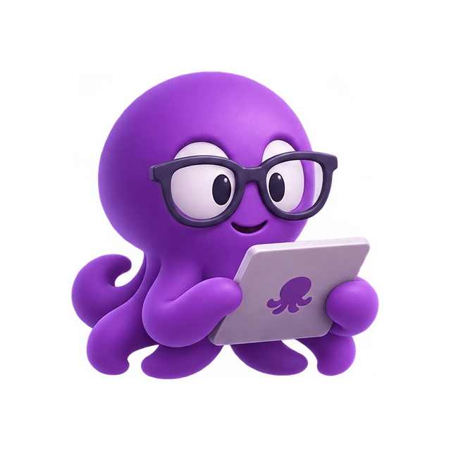
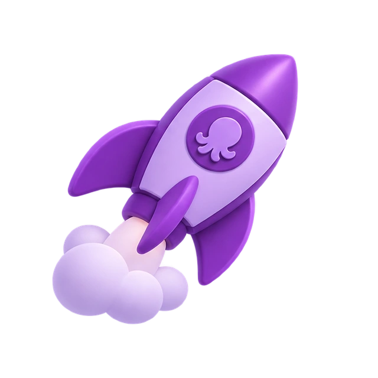
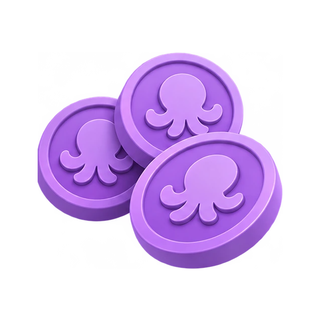

Conectá tu cuenta.
Verificá tu wallet con un mensaje de acceso. No se solicita ninguna clave privada.
Descubrí wallets, intercambiá activos y prepará tu próximo lanzamiento. Tu espacio Web3, con identidad propia.
Beta de integración. AI Studio en construcción. Sin promesas de retorno ni fondos simulados.

Herramientas conectadas para explorar el ecosistema. Elegí una tarea y mantené el control sobre lo que ocurre después.

Balances, actividad pública y watchlists. Datos antes que ruido.
Explorar wallets ↗INTERCAMBIÁRevisá la ruta, los importes y los costos antes de firmar desde tu wallet.
Abrir Pulp Swap ↗CONSTRUÍ
Prepará metadata, suministro y autoridades. La liquidez es un paso separado.
Ver lanzamientos ↗PRÓXIMAMENTEEl estudio creativo de Pulp. Campañas, capas y un agente conectado.
Conocer el estudio ↗El token y la tesorería se presentan a partir de direcciones verificables. El paquete no emite el token oficial ni crea liquidez automáticamente.
Token y transparencia ↗
Verificá tu wallet con un mensaje de acceso. No se solicita ninguna clave privada.
Consultá datos y revisá la operación. Si falta información, la interfaz lo indica.
Autorizá cada operación desde tu wallet y seguí su estado en el historial y el explorador.
Este paquete no fue desplegado públicamente. Incluye código para modo local y un despliegue controlado con HTTPS y PostgreSQL. Se deben configurar, validar y revisar las integraciones antes de operar públicamente.
No. La firma de mensajes y transacciones ocurre en una wallet compatible. Los proveedores y la red requieren una configuración válida.
No. Su valor puede caer. Capitalización de mercado, ingresos del negocio y liquidez no son la misma cosa.
AI Studio está en construcción por decisión del proyecto. No se cobran generaciones ni se anuncia una fecha ficticia.